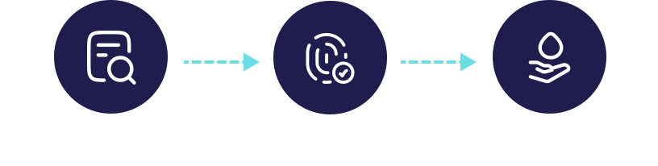

EUSense
Home
EUS
Problem
Solution
Transforming
GI cancer diagnosis and treatment with AI for Endoscopic Ultrasound
Endoscopic Ultrasound (EUS)
is one of the most sensitive GI instruments
Diagnosis
Used for visual diagnosis as well as guiding a biopsy needle in the upper GI
More sensitive than MRI and CT
Therapeutic Interventions
Cutting-edge procedures replacing traditional surgeries. E.g. RFA, Alpha-Radiation Therapy and non-surgical drainage of biliary tract
Usage is still
limited
,
requiring years to
master
Interpreting requires expertise
Difficult navigation and orientation
Restricted field of view

EUS is ideal for human-AI collaboration, removing barriers in diagnosis and therapy.
EUSense will enable GI clinics to perform minimally invasive procedures, expanding operations and
extending lives